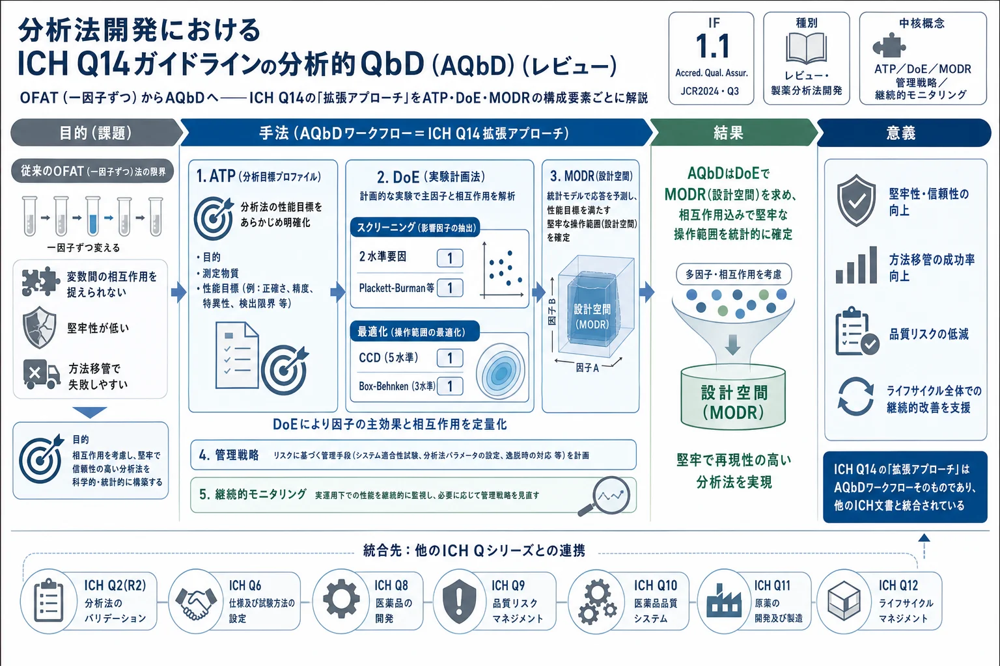

分析法開発におけるICH Q14ガイドラインの分析的QbD（AQbD）（レビュー）

<!-- Sathuluri et al., Accred. Qual. Assur. (2025) 30:1–14 の全訳密度日本語版。 AQbD/ICH Q14 の総説。practitioner レベル。表1（ATP例）・表2（リスクマトリクス）・表3（知識評価例）を保持。 図（Fig.1–9）は原文参照。 -->
書誌情報
- 標題（原題）: Analytical quality by design (AQbD) in the ICHQ14 guidelines for analytical procedure development
- 著者: Kiranmayi Sathuluri, RamyaSri Bakam, Riya Jain, Aishwarya Dande, Rahul Gajbhiye, V. Ravichandiran, Ramalingam Peraman（責任著者）
- 所属: 国立製薬教育研究所（NIPER）医薬品分析部門（インド・ビハール州ハジプール）
- 掲載誌・巻号・DOI: Accreditation and Quality Assurance, 2025, 30:1–14. DOI: 10.1007/s00769-024-01587-w（レビュー）
- インパクトファクター: 1.1（Accreditation and Quality Assurance, JCR 2024 / Clarivate。Q3）
- 受理経過: 2022年10月25日受領／2024年3月6日受理／2024年5月13日オンライン公開。© Springer-Verlag GmbH Germany（Springer Nature 2024）
補足: 本論文はレビュー（総説）で、製薬分析法を堅牢に開発する「分析的QbD（AQbD）」の考え方を、2021年発行のICH Q14ガイドラインの枠組みに沿って解説する。同時期の別記事（本サイトのAbbVie製 Anal Chem Perspective）が「実装戦略・どの要素を選ぶか」に焦点を当てるのに対し、本レビューは「AQbDの各構成要素とは何か・DoEの具体的手法・他のICH文書との統合」を教科書的に整理している。生薬・方剤の多成分定量法を規制対応で整備する際の基礎概念集として有用。
要旨（Abstract）
分析的QbD（AQbD）は、規制要件に準拠した堅牢な分析法を開発するために用いられるリスクベースアプローチの一つである。AQbDの概念は近年文献で確立され、製薬業界で利点が実証されてきた。AQbDに対する見解の相違はあるものの、国際調和会議（ICH）は分析法開発のためのICH Q14文書を発行した。特に、ICH Q14文書の拡張アプローチ（enhanced approach）は分析法開発におけるAQbDのワークフローを模倣している。ICH Q14の推奨の中で、製薬業界にとって難しい構成要素として、知識評価（knowledge assessment）の必要性、方法操作可能領域（MODR）としての実証済み許容範囲（PAR）のための多変量モデル、堅牢性における試料適合性評価、製品の重要品質特性規格を用いたリアルタイムリリース試験がある。加えて、ICH Q14と他のICH文書（ICH Q6A/6B、Q8、Q9、Q10、Q11、Q12）との統合が文書内でよく定義されている。こうして、改訂されたICH Q2(R2)ガイドラインは、ICH Q14文書との統合のもとでバリデーション手順を定義した。
キーワード: AQbD、PAR、MODR、ICH Q14、分析ターゲットプロファイル（ATP）、OFAT
序論（Introduction）
分析法開発の研究は近年、著しい進歩を遂げてきた。特に、ガスクロマトグラフィー（GC）や高速液体クロマトグラフィー（HPLC）でアナライトのクロマト挙動を予測するin silico技術がますます重要になっている。人工ニューラルネット（ANN）、応答曲面法（RSM）、実験計画（DoE）、ケモメトリクス、定量的構造保持相関（QSRR）などが、in silico（コンピュータ予測）手法の例である。全体として、クロマトグラフィーにおける重要分析手順属性（重要分析法属性）と方法応答の科学的理解と関係は、AQbDとQSRR技術でよく探究されている。方法開発におけるAQbDの体系的アプローチは管理戦略を定義でき、工程理解の洞察を提供する。信頼できる科学と品質リスク管理に支えられていることに注意すべきである。
AQbDに関する多数のレビュー・刊行物があるが、一言でいえば、AQbDは分析法性能と方法変数の間の科学的関係を理解する体系的な方法である。AQbDは方法操作可能設計領域（MODR）の最適化にDoEを用い、事前経験・リスク評価・知識管理を含む。分析法ライフサイクルに適用される健全な科学とリスク管理に支えられる。DoEはAQbD技術の一構成要素で、コンピュータ支援の多変量手順が、方法パラメータまたは重要方法変数（CMV）が方法応答・性能とどう相互作用するかを決定する数理モデルを開発する点に注意すべきである。その結果が、方法操作性のための設計領域、すなわちアプローチが高い成功可能性でその目的を達成できる多次元ゾーンの計算である。
製薬業界におけるAQbD——現状
AQbDアプローチは堅牢な方法の開発に用いられ、予期しない誤差の低減、規格外（OOS）・傾向外（OOT）結果の排除、方法移管中の方法失敗リスク低減などの利点を示す。製品開発におけるAQbDの他の利点には、規制上の柔軟性の提供、高度な堅牢性の保証、再バリデーション不要化がある。したがって、AQbD手法は製薬法の開発で推奨される。
2010年のFDAによるAQbD義務化の直後、HPLC・UPLC・LC–MS/MS・GC–MS/MS・HPTLC・UV–可視分光法などのAQbDベース分析技術が多数報告された。2021年の〈1220〉章の正式発行の前に、USPは2016年に「分析手順のライフサイクル管理: 方法開発・手順性能適格性確認・手順性能検証」を公表した。安定性指示アッセイ法（SIAM）のHPLC法開発が、重要不純物の分離のためAQbD手法を用いて製薬業界により導入された。その後、原薬（API）のアッセイ、関連物質・化学物質・汚染物質の定量、最終製剤中の保存料のアッセイのためのAQbD法も開発された。
2021年、ICHは分析法開発の新しい品質政策文書として「ICH Q14ガイドライン」を発表した。この文書はICH加盟国にリスク・科学ベースアプローチを分析法開発で使うよう強調する。この文書は「最小アプローチ（minimal approach）」と「拡張アプローチ（enhanced approach）」の2つを記述した。拡張アプローチはAQbDの概念を模倣する（Fig.1）。このアプローチは、分析ターゲットプロファイル（ATP）、重要分析手順属性、知識・リスク評価、CMV、DoEを用いた方法最適化・開発、MODR、管理戦略、AQbD法バリデーション、継続的方法モニタリングといった様々な構成要素を含む。
従来法とAQbDベース分析アプローチの違い
従来のアプローチと科学的アプローチは、分析法開発に関してかなり異なる目標を持つ。従来の一因子ずつ（one-factor at a time, OFAT）アプローチでは、初期方法条件を構築するため、アナライトの物理化学的パラメータとカラム化学が分析法開発研究で関連づけられた。このOFAT法はCMV水準の最適化を許さず、CMVと方法応答・性能の間の関係を調査しない。その結果、従来法による分析技術の頑健性の程度はかなり低く、方法移管中の方法失敗の確率が大きい。したがって再バリデーション手順の必要性が消えない。堅牢性はICH Q2の分析手順バリデーション文書でバリデーションパラメータとして挙げられているが、特異性・正確性・精度・直線性・検出限界（LOD）・定量限界（LOQ）といった他のパラメータのような明確な義務ではなく、試験として定義されている。
しかしながら、製薬業界は製品の品質・安全性・有効性に最大の価値を置く。製品ライフサイクルにおいて、分析法は堅牢な工程と製品品質の主要指標として機能する。製品品質は、知識ベースの科学的方法を用いて高品質製品を生産しリコール数を減らすのに役立つQbDと工程分析技術（PAT）の使用で高められる。USFDAは、その有効性のためジェネリック製剤へのQbD追加を推奨した。過去には規制当局はQ8〜Q11のICH推奨実行をより強く推す傾向があった。したがってFDAは、製品QbDアプローチに沿って企業が分析法にAQbDを実装することを求める。AQbDアプローチはATP・重要分析手順属性・DoE・リスク評価管理計画・AQbD法バリデーションといった要素の体系的形式を通じて堅牢性と方法性能を保証する。従来法とAQbD分析法開発の流れはFig.2・Fig.3に示す。
AQbDアプローチの構成要素
分析ターゲットプロファイル（ATP）
ICH Q2の品質要件、すなわち特異性・精度・正確性・直線性・範囲・定量限界・検出限界を含む方法性能特性（バリデーションパラメータ）が、意図する目的とともに集合的にATPに結合され、方法のATPを形成する。ICHとUSPによれば、精度・検出限界・定量限界は固有のランダム変動の例で、正確性・特異性・直線性は系統的変動の例である（Fig.4）。しかしこれらのガイドラインは、範囲と堅牢性を方法性能評価の重要変数として指定しなかった。
AQbDの最初のステップは、方法の結果を製品の品質目標製品プロファイル（QTPP）に結びつけるATPを開発することである。PhRMAとEFPIAの定義によれば、ATPは方法の目的を定義し、方法選択・設計・開発努力を導くために使われる。規制当局がATP声明を受け入れると、ATPはAQbDにおける重要なシグナルとなり、分析法の継続的改善とその選択を可能にする。手順開発のため、分析者はATPを用いて最適な分析技術を選べるべきである。利用可能な分析ツールの有効性の事前知識と実験的検証がこの推進力となる。技術が選ばれると、方法開発を助けATPの性能基準が満たされることを保証する手順固有の性能指標を構築できる。主に内部の変更管理システムが、規制柔軟性を提供するためのATPの成功裏の実装を担う。標的アナライト・分析技術カテゴリー・製品特性を含む方法要件の選択がATP同定の一部であり、技術要件と分析上の重要性を予見するには初期リスク評価の統合が必要である。アッセイ・不純物定量法の典型的ATPプロファイルをTable 1に示す。
Table 1. アッセイ・不純物定量法の典型的ATPプロファイル
| No | 製品の重要分析手順属性 | 方法性能特性 | 許容水準 | 標的属性に適合する分析法 |
|---|---|---|---|---|
| 1 | アッセイ | 特異性／直線性／正確性／精度 | ピーク純度100%／真値の80–120%／98–102%／±2.0%（RSD） | HPLC, UPLC, LC–MS, HPTLC |
| 2 | 不純物/関連物質法 | 特異性／直線性／正確性／精度 | ピーク純度100%／真値の50–150%／98–102%／不純物≤0.15%: 真値±20%（確率80%）・不純物>0.15%: 真値±15%（確率90%） | HPLC, UPLC, LC–MS, HPTLC |
分析手順パラメータ範囲
分析法における分析手順パラメータ範囲を特定する初期リスク評価は、標的分析手順属性と各変数の科学的相関を含むべきである: (a) アナライト変数（溶解度・pH値・極性・荷電官能基・沸点・溶液安定性）、(b) 装置変数、(c) 方法最適化パラメータ。分析手順パラメータ範囲は方法パラメータと方法属性から成る。製品の品質・有効性・安全性に責任を持つ重要分析手順属性は分析開発過程で決定される。重要分析手順属性は製品によって異なる（例: アッセイ、不純物限度、崩壊時間など）。製品の重要分析手順属性はHPLCのような分析アプローチで評価できる。したがってHPLC技術パラメータ（移動相組成・緩衝液%・pH・希釈剤・流速・カラム温度・検出器タイプ・カラム選択・有機修飾剤・溶出技術）（Table 2）が方法変数とみなされる。分析手順パラメータ範囲は知識ベースのリスク評価を用いて列挙でき、変数はその重要性のため方法応答の観点で方法性能と論理的に相関づけられる。同様に、API・製品中の揮発性汚染物質の濃度はGC法で評価できる（ガス流量・試料希釈剤・濃度・オーブン温度とプログラム・注入温度）。HPTLCでは、TLCプレート厚・移動相・注入濃度と量・プレート展開時間・発色試薬・検出法が含まれる。
Table 2. HPLC技術の分析手順パラメータ範囲の方法応答への典型的リスク評価マトリクス（重要性評価: 高=赤/中=黄/低=緑/--=無視できるリスク。標的アナライトと意図する用途で方法ごとに変わる）
| 変数タイプ | 変数名 | tR | N | TF | 分解能 | ピーク面積 |
|---|---|---|---|---|---|---|
| 方法 | 流速 | |||||
| 方法 | pH | |||||
| 方法 | 水相% | |||||
| 方法 | 緩衝液% | |||||
| 方法 | カラム温度 | |||||
| 方法 | 有機相 | |||||
| 方法 | カラムタイプ | |||||
| 装置 | 緩衝液タイプ | |||||
| -- | 検出器タイプ | -- | -- | -- | -- | -- |
| 方法 | 検出設定 | -- | -- | -- | -- | |
| 装置 | カラム長 | |||||
| 装置 | カラム粒子径 | |||||
| 方法 | 溶出タイプ | |||||
| 方法 | アナライト濃度 | -- | ||||
| 方法 | 注入量 | -- | -- | -- | ||
| 薬品 | 溶媒純度 | -- | -- | -- | ||
| 装置 | カラム経年 |
（各セルの重要性は方法ごとに評価。原表は色分けで高=赤/中=黄/低=緑を示す）
実験計画（DoE、方法最適化段階）
これは統計ベースの実験アプローチで、各方法応答へのCMVを効果の水準（正または負）の観点で定量的に評価・スクリーニングする。DoEはデータ評価、重要方法変数の重要性の検証、重要方法属性に堅牢な領域を生む適切な最適範囲の決定のための重要ツールである。AQbDでスクリーニング・最適化の双方に使える異なるDoEツールがある。分析化学では応答曲面法が最適化によく使われる。実験計画は2タイプに分けられる: (a) スクリーニング設計、(b) 最適化設計。最も人気のスクリーニング設計は2水準完全要因・分数要因・Plackett–Burman設計で、実験数が少なく様々な入力パラメータを探索できる。
最も効果的なスクリーニング設計は2水準完全要因設計で、入力変数の主効果と出力応答との相互作用を推定できる。2水準完全要因設計に必要な実験数は 2^k（k=入力因子数）で計算される。分数要因設計はスクリーニングで最も一般的に使われ、少ない試験でより多くの入力変数を評価できる。Plackett–Burman設計は2水準分数要因設計（分解能III）の特殊形で、N実験（Nは4の倍数）で最大N-1の入力成分を調査できる。3水準完全要因・中心複合設計（CCD）・Box–Behnken設計も最も人気の最適化設計で、複雑な応答曲面のモデリングを可能にする。3水準完全要因設計は必要実験数が多い（3^k）ため、2〜3因子の探索時のみ頻用される。CCDは各入力成分に5水準を用いるが3水準完全要因より少ない実験で済むため、最も人気の最適化設計の一つ。Box–Behnken設計は特殊な3水準分数要因設計で、一次・二次応答曲面のモデリングを可能にする。入力因子が多い場合、3水準完全要因より経済的である。全体として応答曲面法（RSM）が最適化ツールである。
方法操作可能設計領域（MODR）
MODR（設計空間）は、ATPと特定の方法性能基準の双方を達成するプラットフォームとして調査・検証された方法パラメータ範囲の集合である（少なくとも、ただし必ずしも全ての主要パラメータを含むわけではない）。MODRは常に特定の戦略に制限される。複数のプログラムが共有方法を使いうるとしても、MODRはATP基準を満たすよう定義される。MODRの開発前に、次の要素が存在せねばならない: (1) QTPPとATP、(2) 技術選択、(3) リスク評価、(4) 方法開発。MODRは適切な方法性能を提供できる方法因子・パラメータに依存する多次元空間を作るのに使われる。加えてシステム適合性・RRT・RRFといったいくつかの重要な方法管理の設定にも使われる。ATP適合を判断するには、MODRを定義し追加の方法検証活動を行う。
管理戦略とリスク評価
方法目的と方法性能の強い結びつきを確保するには、方法開発・検証段階で集めた膨大なデータに基づく有用な方法管理戦略を開発せねばならない。方法特性とATP基準を満たす能力の相関も作れる。管理戦略は方法変動に影響する方法因子を取り込むべきである。MODRとアナライトタイプの知識から、計画された管理セットを生成せねばならない。加えて、DoEとMODR段階で方法管理計画を構築できる。ATP基準を満たす能力は、統計的実験データを用いて技術とアナライト特性の相関を描くことで判断できる。一貫しない方法パラメータは管理戦略（試薬グレード・装置ブランドやタイプ・カラムタイプ）で解決できる。従来法と比べ、AQbDアプローチ下の方法管理戦略は大きくは異ならないように見える。しかし、方法管理は重要分析手順属性・DoE・MODR実験データに基づいて開発し、方法の目的と性能のより緊密な相関を確保すべきである。
AQbD法の検証とバリデーション
AQbD法バリデーション戦略は、分析APIバッチのバリデーションに使われる。DoEとMODRの専門知識を活用して、あらゆるAPI製造変更に対し再バリデーションなしで方法バリデーションを作成する。ICH Q2バリデーションに必要な構成要素に加え、この技術は相互作用・測定不確かさ・管理戦略・継続的進歩の詳細を提供する。従来のバリデーション手順と比べ、この手法は品質を犠牲にせず少ない資源を使う。「方法バリデーション戦略」という用語は、多数のAPIバッチにわたって分析法をバリデートする過程を指す。
継続的方法モニタリング（CMM）と継続的改善
商業段階で設計空間を実装する管理アプローチがライフサイクル管理である。CMMは、設計空間の作成・使用を通じて獲得した知識を共有する継続的過程で、AQbDライフサイクルの最終段階である。リスク評価の結果、事前知識に基づく仮定、統計的設計の考慮、その他の側面も含まれる。CMMは設計空間・MODR・管理戦略・重要分析手順属性・ATPの橋渡しである。方法がバリデーションを経ると、定期的に使用でき性能を継続的に追跡できる。管理図・システム適合性データの追跡・方法関連研究などのツールで達成できる。CMMの助けで、分析者は傾向外性能を迅速に認識・対処できる。
ICH Q14文書への洞察
分析手順の作成とライフサイクル管理の一般的考慮がICH Q14文書で示された。この文書の目標は、必要な特異性/選択性を備え、許容範囲内で1つ以上の物質特性を正確に測定するのに適した分析法を作ることであった。一部のパラメータがバリデート・再バリデートされない可能性があっても、分析工程の作成・使用に科学・リスクベースの根拠を使うことを提案する。例えば、方法開発段階のDoE研究からの堅牢性データを、連結された分析アプローチの性能特性のバリデーションデータとして使える。
分析法開発における最小アプローチと拡張アプローチ
文書は、分析開発時に考慮すべき様々な要素の概要を提供した: 試験する原薬・製剤の特性、適切な分析手順・技術・ツール、報告範囲にわたる方法性能特性を評価する適切な開発研究（校正モデルと低/高範囲端の限度を含む）、アナライトの管理戦略（パラメータ設定とシステム適合性）。
拡張アプローチでは、分析手順知識を体系的に開発・改善できる。最小アプローチに規定された構成要素に加え、1つ以上の構成要素が推奨される。推奨される構成要素は、試料特性と変動性、ATP、リスク解析、方法パラメータ範囲とその効果を調査する事前実験、性能基準への適合を確保する適切な設定値/範囲パラメータ、改善された手順理解からの分析手順管理戦略、確立条件（EC）・実証済み許容範囲（PAR）・MODRを含むライフサイクル変更管理計画である。
拡張アプローチは最小アプローチと異なり、それらの手順のパラメータ（方法変数）のより良い科学的理解とライフサイクル管理の柔軟性（MODRやPAR）を備えた堅牢な分析手順の作成に関わる。改善されたアプローチの主な便益には、分析手順属性と手順性能の関係の洞察、事前定義された性能特性（ATP）と重要分析手順属性・その許容基準の相関、運用信頼性の向上、予防措置の促進、分析手順知識を通じた継続的改善が含まれる。
ICH Q14に基づくATP
ATPは、必要な方法性能特性を満たす分析技術の選択とICH Q2に基づく方法バリデーションの許容基準を決める。分析技術の選択は運用環境（at-line, in-line, off-line）を考慮すべきである。ATPは分析手順の設計・開発、性能モニタリング、継続的手順改善を促進すべきである。その結果、全ライフサイクルを通じて、分析工程が使用に適切であり続けることを確保するライフサイクル管理の基礎として機能する。任意ではあるが、ATPの正式な文書化と提出は規制コミュニケーションを助けうる（Fig.5）。
知識評価
知識管理は、製品・製造工程と同様（ICH Q10）、分析手順の開発とライフサイクル全体で重要である。知識評価は、製品知識と分析法選択（ベストプラクティス・現行技術・現行規制期待を含む）の相関に基づく。加えて、著者らの見解では、アナライト化学とその知識評価が価値を加えうる（Table 3）。
Table 3. 化学ベースの知識評価の典型例（エトフェナメート）
| 分子化学 | 重要HPLC方法変数 | 知識評価 | リスク |
|---|---|---|---|
| メタノールに易溶・水にほぼ不溶 | 大半の方法は移動相中の水・水性緩衝液の組み合わせに依存 | 組成の小変化がSSTと方法性能に影響 | 高水含量が薬物を析出させうる |
| pKa 6.0と7.0 | 移動相pHは3〜7 | pHの小変化がイオン化%に影響し方法効率に影響 | 低pHがエステルを加水分解しうる |
| 粘性液体 | 流速の濃度依存性 | 軽度の圧力変動により方法効率に影響しうる | 高濃度が直線性に影響 |
リスク評価
品質リスク管理は、不正確な報告の可能性を下げるため奨励され、ICH Q9ガイドラインの附属書1に従って実施できる。リスク評価は、方法性能に影響しうる分析手順の可能な因子と操作ステップの同定・列挙に基づく。因子の重要性の分析手順性能への効果を知るために解析する。次に分析手順管理戦略を確立できる。リスクレビューでは、分析手順性能が管理下にあることを確保する継続的モニタリングを確立する必要がある。申請者は良好なリスク管理の結果の文書を提供すべきである。
医薬品品質システム（PQS）——堅牢性と分析パラメータ範囲
分析法の堅牢性は、典型条件下または方法パラメータの小変動下で期待される性能を提供する能力を測る試験である。知識・リスクベース評価が堅牢性を研究するパラメータ選択を助けうる。堅牢性試験はバリデーションデータ（中間精度など）で補完できる。堅牢性研究では、研究する範囲パラメータを綿密に設計せねばならない。例えば、パラメータが本質的に高変動性なら（生物試薬を要するものなど）より広い範囲の検討が必要かもしれない。多変量手順の堅牢性はさらなる検討を要しうる。分析手順の管理戦略は堅牢性評価の結果を考慮すべきである。ここでATPは分析手順属性と関連基準の導出に使える。実証済み許容範囲（PAR）の決定には、1パラメータを一変量で検討できる。重要パラメータの範囲とその相互作用を検討する改善された方法は、多変量実験（DoE）を使うことである。リスク解析と事前知識を活用し、実験調査のためパラメータ・属性・適切な関連範囲を同定すべきである。例えば、異なる装置を実験計画でカテゴリー変数とみなしうる。
バリデーションデータは、分析技術の日常使用を意図するPARまたはMODRの領域を包含せねばならない。MODRのバリデーション手順は、ICH Q14附属書Bに従い、性能特性・分析工程属性許容基準・パラメータ範囲・分析手順管理戦略・バリデーション戦略を表示すべきである。分析手順開発中にカバーされなかった性能基準はバリデーション実験を要する。追加バリデーションの範囲は分析手順バリデーション戦略で決められる。
分析手順管理戦略
分析技術の管理計画の基礎は、事前知識・開発データ・リスク評価・堅牢性が提供する。バリデーション前後で、分析法管理アプローチはICH Q2に従って述べられ、分析手順管理戦略はシステム適合性試験（SST）を考慮する。拡張アプローチは、方法の正確性を確保するため慎重に選ばれたSSTパラメータと基準のセットを使う。多変量モデルに依拠する分析技術はデータ品質を確認すべきである。適切な試料応答と結果の妥当性を確保するため、SSTに加え試料適合性評価が必要になりうる。試料適合性評価はソフトウェアで評価でき、多変量モデルに依拠する分析手順で使う試料がモデル空間に収まるかを判断する（データ品質チェックと呼ぶ）。
分析手順の承認後変更
工程知識・分析手順知識・継続的改善が、分析法条件変更の必要性の背後にある力となることが多い。開発に使われた方法によらず、ICH Q12で扱われる実現要素とツールを使って全分析工程を改善できる: 既存のリスクベース解析技術（EC）の修正（関連する地域規制枠組みで指定）、販売承認保有者（MAH）を提供する承認後変更管理プロトコル（PACMP）。規制当局は製品ライフサイクル変更管理（PLCM）文書を用いて承認後に起きると予想される変更についてコミュニケーションできる。PQS文書化には、MODR内で行うものや方法性能に影響しないとみなされるパラメータなど、規制承認が不要なものを含む全変更を記録する必要がある（ICH Q12第8章）。
適切な報告区分を選ぶには、潜在的変更に関連するリスクを事前に評価すべきである。関連するリスク低減戦略を、分析手順の工程理解・分析手順管理戦略・製品/工程知識から決めるべきである。最後にリスク区分を選び「高・中・低」と指定する。一般に、将来の変更に関連するリスクは、事前知識や分析手順の堅牢性の理解で低減できる（Fig.7）。
多変量分析手順
多変量分析技術は多変量校正モデルに複数の入力変数を含む。堅牢な多変量分析手順の作成には、モデル変数選択・サンプルサイズ・範囲にわたる試料分布・データ前処理といった複数ステップが関わり、全て科学に支えられねばならない。
- 試料と試料母集団: 測定モデル変数は参照試料またはバリデートされた参照手順から得る。多変量モデルでは、試料は入力測定とその対応参照値（定性法と定量測定の数値）から作られる。参照試料は均質でなければならず、参照分析手順の不確かさは多変量分析手順性能に比べ相対的に低くなければならない。生産・分析中に現れる可能性が最も高い変動源（原材料の品質・製造工程）を試料母集団に含めるべき。商業レベルで適切な変動性を持つ試料の取得は難しく、パイロットスケール試料で十分な多様性を提供する。定量分析の校正モデル構築に必要な試料数は、試料マトリックスの複雑性・標的アナライト信号への干渉に依存する（複雑なマトリックスほど多くの試料が必要）。校正・内部試験セットともバリデーションの試料を使わない。
- 変数選択: モデル構築過程の一部として変数を選ぶ。分光応用では、物理・化学特性の最も正確な推定を提供するスペクトル領域を選ぶ波長範囲選択が典型的。
- データ変換: データタイプ・ツール・試料・意図するモデル応用・事前知識がデータ変換法の選択に影響しうる。アーティファクトの導入や重要情報の喪失の可能性があるため、変換は慎重に行うべきで、正当化・文書化すべき。
- 堅牢性: モデル開発の目標は予測誤差を最小化し堅牢なモデルを提供すること。成分・工程・環境・装置に関連する変動源を取り込むため堅牢性をモデルに組み込むべき。堅牢性は校正セットの組成・データ変換法・変数選択・潜在変数の数に依存する。過学習モデルは潜在変数が過剰で堅牢性を失い、より頻繁な更新を要する。
- 再校正とモデル保守: 多変量分析アプローチは校正モデル性能の定期的モニタリングを含むべき。モデルの正確さと基礎仮定を確認する統計ツールが診断として必要。校正モデルの経時的性能を、モデル結果と参照試料・参照手順の結果を比較して頻繁に評価すべき。確認試験は新たに発見された工程変動・予期しない工程事象・定期的な装置保守などに応じて開始しうる。
リアルタイム試験の分析手順
リアルタイムリリース試験（RTRT）は、活性成分・中間体・最終製品を含む工程内・標的材料の品質を評価・保証する能力を指す。ICH Q8によれば、しばしば材料特性と工程管理の正当な組み合わせを持つ。管理計画の他の構成要素（工程モニタリング・工程内管理）と協調して、RTRTは製品品質を保証する。RTRTは、1つ以上の製品重要分析手順属性の評価を提供するため、その重要分析手順属性に特異的でなければならない。RTRT法と許容基準・製品重要分析手順属性の相互作用、およびICH Q2に基づくRTRT手順を検討すべき。製品規格はICH Q6A・Q6Bに従い該当するRTRT分析手順と関連許容基準を含むべき。RTRTの定量結果は従来試験と同じ単位で提供すべき（Fig.8）。
文書上の考慮
原薬のICH M4Q CTDの3.2.S.4.2項と製剤の3.2.P.5.2項に分析手順の記述を含めるべきである。ICH Q14に従い、分析手順にECが提案され、ECは裏付けデータと区別すべきで、申請者はICH Q12と本文書第7章の要件に準拠し、ICH Q12に示すライフサイクル管理の側面を提出に含めるべき。ICH Q14構成要素が他のICH文書とどう統合されるかをFig.9に示す。
結論（Conclusions）
AQbD構成要素はICH Q14文書で検討されている。特に、拡張アプローチは規制柔軟性に適するようAQbDワークフローの構成要素を詳述した。ICH Q14文書は、ICH Q2に基づく方法性能確立・リアルタイム試験・再校正・知識/リスク評価といった他のベストプラクティスと統合されている。したがって、方法開発でこれらの概念を統合することは常に高度に堅牢な分析手順を保証する。全体として、分析開発でのICH Q14実装は初期の課題を経験しうるが、堅牢な分析の確立に関して解決する必要がある。ICH Q14はICH Q6A/6B・Q8・Q9・Q10・Q11・Q12を含む他のICH文書と連結されていることがよく示されている。
参考文献
- Mokhtar HI, Abdel-Salam RA, Hadad GM (2015) Design space calculation by in silico robustness simulation with modeling error propagation in QbD framework of RP-HPLC method development. Chromatographia 78(7–8):457–466. https://doi.org/10. 1007/s10337-015-2858-2
- Raman NVVSS, Mallu UR, Bapatu HR (2015) Analytical quality by design approach to test method development and validation in drug substance manufacturing. J Chem. https://doi.org/10.1155/ 2015/435129
- ICH Q8 (2009) EMEA/CHMP, 2009, ICH Topic Q 8 (R2) Pharmaceutical Development, Step 5: Note for Guidance on Pharmaceutical Development. Regul. ICH, vol 8, no June
- Borman P, Chatfield M, Nethercote P, Thompson D, Truman K (2007) The application of quality by design to analytical methods. Pharm Technol 31:142–152
- Hanna-Brown M, Borman P, Bale S, Szucs R, Roberts J, Jones C (2010) Development of chromatographic methods using QbD principles. Sep Sci 2:12–20
- Peraman R, Bhadraya K, Reddy YP (2015) “868727,” vol 2015
- Deidda R, Orlandini S, Hubert P, Hubert C (2018) Risk-based approach for method development in pharmaceutical quality control context: A critical review. J Pharm Biomed Anal 161:110–
- Tome T, Žigart N, Časar Z, Obreza A (2019) Development and optimization of liquid chromatography analytical methods by using AQbD principles: Overview and recent advances. Org Process Res Dev 23(9):1784–1802. https://doi.org/10.1021/acs.oprd. 9b00238
- Prajapati PB, Patel A, Shah SA (2021) Risk and DoE-based DMAIC principle to the multipurpose-RP-HPLC method for synchronous estimation of anti-hypertensive drugs using AQbD approach. J AOAC Int 104(5):1442–1452. https://doi.org/10.1093/ jaoacint/qsab079
- Urich JAA, Marko V, Boehm K, García RAL, Jeremic D, Paudel A (2021) Development and validation of a stability-indicating uplc method for the determination of hexoprenaline in injectable dosage form using AQbD principles. Molecules. https://doi.org/10. 3390/molecules26216597
- Hasnain MS, Siddiqui S, Rao S, Mohanty P, Jahan Ara T, Beg S (2016) QbD-driven development and validation of a bioanalytical Fig. 9 Integration of ICH Q14 components with other ICH documents 14 Accreditation and Quality Assurance (2025) 30:1–14 LC-MS method for quantification of fluoxetine in human plasma. J Chromatogr Sci 54(5):736–743. https://doi.org/10.1093/chrom sci/bmv248
- Robu S et al (2019) Contribution to the optimization of a gas chromatographic method by QbD approach used for analysis of essential oils from salvia officinalis. Rev Chim 70(6):2015–2020. https://doi.org/10.37358/rc.19.6.7266
- Hejmady S, Choudhury D, Pradhan R, Singhvi G, Dubey SK (2021) Analytical quality by design for high-performance thinlayer chromatography method development. In: Handbook of analytical quality by design, pp. 99–113. https://doi.org/10.1016/ B978-0-12-820332-3.00007-8.
- Almeida J, Bezerra M, Markl D, Berghaus A, Borman P, Schlindwein W (2020) Development and validation of an in-line API quantification method using AQbD principles based on UV-vis spectroscopy to monitor and optimise continuous hot melt extrusion process. Pharmaceutics. https://doi.org/10.3390/pharmaceut ics12020150
- Weitzel J et al (2021) Understanding quality paradigm shifts in the evolving pharmaceutical landscape: perspectives from the USP quality advisory group. AAPS J 23(6):1–8. https://doi.org/10. 1208/s12248-021-00634-5
- View of Analytical Quality by Design (AQbD) _ A New Horizon For Robust Analytics in Pharmaceutical Process and Automation.
- Jackson P et al (2019) Using the analytical target profile to drive the analytical method lifecycle. Anal Chem. https://doi.org/10. 1021/acs.analchem.8b04596
- Kochling J, Wu W, Hua Y, Guan Q, Castaneda-Merced J (2016) A platform analytical quality by design (AQbD) approach for multiple UHPLC-UV and UHPLC-MS methods development for protein analysis. J Pharm Biomed Anal 125:130–139. https://doi. org/10.1016/j.jpba.2016.03.031
- Borman P et al (2022) Selection of analytical technology and development of analytical procedures using the analytical target profile. https://doi.org/10.1021/acs.analchem.1c03854
- Schweitzer M et al (2010) Implications and opportunities of applying QbD principles to analytical measurements. Pharm Technol 34(2):52–59
- Nanduri R, “An insight on scientific and risk based approaches for drug product development”.
- “‘Use of uncertainty information in compliance assessment,’ in Eurachem/CITAC Guide, 2007.”
- Garg LK, Reddy VS, Sait SS, Krishnamurthy T, Vali SJ, Reddy AM (2013) Quality by design: design of experiments approach prior to the validation of a stability-indicating HPLC method for Montelukast. Chromatographia 76(23–24):1697–1706. https://doi. org/10.1007/s10337-013-2509-4
- Laures AMF, Wolff JC, Eckers C, Borman PJ, Chatfield MJ (2007) Investigation into the factors affecting accuracy of mass measurements on a time-of-flight mass spectrometer using Design of Experiment. Rapid Commun Mass Spectrom. https://doi.org/10. 1002/rcm.2852
- Champarnaud E et al (2009) Trace level impurity method development with high-field asymmetric waveform ion mobility spectrometry: systematic study of factors affecting the performance. Rapid Commun Mass Spectrom. https://doi.org/10.1002/ rcm.3844
- Fukuda IM, Pinto CFF, Moreira CDS, Saviano AM, Lourenço FR (2018) Design of experiments (DoE) applied to pharmaceutical and analytical quality by design (QbD). Braz J Pharm Sci 54(Special Issue):1–16. https://doi.org/10.1590/s2175-979020180000010 06
- Davis B, Lundsberg L, Cook G (2008) PQLI control strategy model and concepts. J Pharm Innov 3(2):95–104. https://doi.org/ 10.1007/s12247-008-9035-1
- Abhinandana P (2021) IMPLEMENTING OF ANALYTICAL QUALITY BY DESIGN FOR HIGH QUALITY, no. July 2017
- Scypinski S, Roberts D, Oates M, Etse J (2002) Pharmaceutical Research and Manufacturers Association acceptable analytical practice for analytical method transfer. Pharm Technol 26(3):84–89
- I. 1” “USP <1220> Analytical procedure Lifecycle, USP-NF 2023, “Analytical procedure life cycle,” no. 1 (2022)
- Bandopadhyay S, Beg S, Katare OP, Sharma T, Singh B (2020) Integrated analytical quality by design (AQbD) approach for the development and validation of bioanalytical liquid chromatography method for estimation of valsartan. J Chromatogr Sci 58(7):606–621. https://doi.org/10.1093/chromsci/bmaa024
- United States Pharmacopeial Convention (2007) VALIDATION OF COMPENDIAL PROCEDURES Test. United States Pharmacopeial Conv., vol 1, p 3445
- ICH (2022) ICH—Q14 on analytical procedure development. Int. Conf. Harmon., vol 31, no 0, p 65, [Online]. Available: https:// www.ema.europa.eu/en/documents/scientific-guideline/ich-guide line-q14-analytical-procedure-development-step-2b_en.pdf
- Alhakeem MA, Ghica MV, Pîrvu CD, Anuța V, Popa L (2019) Analytical quality by design with the lifecycle approach: a modern epitome for analytical method development. Acta Med Marisiensis 65(2):37–44. https://doi.org/10.2478/amma-2019-0010
- Kumar N (2020) Analytical method development by using QbD— an emerging approach for robust analytical method development. J Pharm Sci Res 12(10):1298–1305
- Kumar N, Sangeetha D (2020) Analytical method development by using QbD-An emerging approach for robust analytical method development. J Pharm Sci Res 12(10):1298–1305
- Ahmed S (2018) Technical and regulatory considerations for pharmaceutical product lifecycle: Ich q12. Contract Pharma 4:1–31 Publisher's Note Springer Nature remains neutral with regard to jurisdictional claims in published maps and institutional affiliations. Springer Nature or its licensor (e.g. a society or other partner) holds exclusive rights to this article under a publishing agreement with the author(s) or other rightsholder(s); author self-archiving of the accepted manuscript version of this article is solely governed by the terms of such publishing agreement and applicable law.
訳者補足
- 本レビューの位置づけ: AbbVie製のもう一つのICH Q14論文（本サイトの Anal Chem Perspective）が「実装戦略・どの4要素を選ぶか」に絞るのに対し、こちらはインドNIPERの研究者による教科書的な総説。AQbDの各構成要素（ATP→重要方法変数→DoE→MODR→管理戦略→バリデーション→継続モニタリング）を一つずつ定義し、DoEの具体的手法（Plackett-Burman、CCD、Box-Behnken）や多変量法・リアルタイム試験まで網羅する。両者を併せ読むと「概念（本レビュー）＋実装（Perspective）」で立体的に理解できる。
- OFAT vs DoE の核心: 従来の「一因子ずつ（OFAT）」変える方法は、因子間の相互作用を見逃す（例: pHと有機相比が同時に効く場合を捉えられない）。DoE（実験計画）は複数因子を同時に振って相互作用込みで数式化し、「多少ずれても品質を保てる範囲＝MODR（設計空間）」を統計的に確定する。これがAQbDが堅牢性を高める仕組み。
- DoEの使い分け: 「まずスクリーニング（Plackett-Burman等で沢山の因子から効くものを絞る）→次に最適化（Box-BehnkenやCCDで少数の重要因子を精密に）」という2段構え。本サイトのイチジク・黄連QbD論文が実際にこの流れ（単因子→Box-Behnken）を踏んでいる。
- 生薬QCとの関わり: 直接の生薬論文ではないが、漢方製剤の多成分定量法を「堅牢で・再バリデーション不要で・当局が受け入れる」形に整備する際の共通言語（ATP/MODR/EC）を提供する。
- 図（Fig.1〜9、特にFig.9のICH文書統合図）は原文参照。